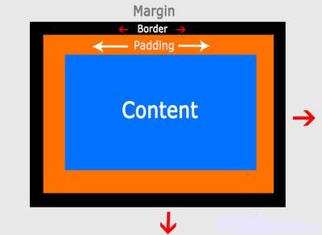

This is a picture of me with a nice purple border

In a White Room with Black Curtains
(Near the Station)
by Mark McQuillen
May 25, 2014
The Difference between Borders, Margins, and Padding.
Take a look at this. I think it pretty much explains it:

Uh. Still confused? Ok, how about this?

You like colors? I got colors!
So as you can see, the content is the stuff in the middle. Could be some text, could be an image. It's nice to have a border around the content, but not so fast! You don't want the border right up against a picture or some text do you? No, well probably not, of course in this world there are people with all tastes. But usually people like some space between their content and their borders, and that space is called.... drum roll please: THE PADDING.
But wait! There's more. People don't like their borders right up against another border or the side of the screen, so there's some space there called, you guessed it, the margin.
I bet you're wondering how I coded that sweet purple border around my face up in the top right.
I got no secrets. I did it like this:
#sidebar {
float: left;
width: 25%;
border: 7px solid purple;
padding: 10px;
margin-right:5%;
}